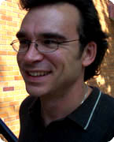

Robert J. Moore
Executive Director
rmoore@eany.org |
 |
Robert Moore joined Environmental Advocates as the organization's executive director in June, 2004.
Prior to joining Environmental Advocates, Moore served as the Lake Champlain Lakekeeper for the Conservation Law Foundation’s Vermont Advocacy Center. Before that Moore was the Executive Director of Prairie Rivers Network, Illinois’ only statewide river conservation group. Under his leadership, Prairie Rivers Network rose to prominence as one of the country's most respected statewide river conservation groups. For his work, Moore was recognized by the Natural Resources Defense Council and the Clean Water Network as one of the 30 Clean Water Heroes of the Past 30 Years. Moore is a nationally recognized expert on the federal Clean Water Act and its application to local and statewide pollution problems.
"Environmental Advocates is the premier environmental watchdog in New York and I am proud to be asked to lead this organization," Moore says. As the Lake Champlain Lakekeeper, Moore created a new program to protect and restore the lake through science-based policy advocacy. As a result of his efforts more than 520,000 pounds of pollution were eliminated from the lake and its tributaries. He also served as co-chair of the Conservation Law Foundation’s Water Issues Team, identifying regional strategies for protecting waters across New England.
At Prairie Rivers Network Moore led the organization’s transformation into one of the most respected statewide river conservation groups in the country. Both the staff and the organization’s budget tripled in size while effective programs were developed for scrutinizing Illinois’ enforcement of the Clean Water Act and restoring the state’s rivers. The organization’s accomplishments included watchdogging the establishment of water quality standards and the issuance of water pollution permits. During Moore’s five years at Prairie Rivers more than 6.5 million pounds of pollution were eliminated from the state’s rivers. Moore also created and achieved passage of state legislation that prohibits the clear-cutting of forested areas along Illinois streams and drafted legislation that required polluters to pay for water pollution permits which was adopted into Illinois law in 2003.
Moore has a Master’s Degree in Atmospheric Sciences from the University of Illinois and a Bachelor’s degree in Physics from Illinois State University.
"Environmental Advocates’ core mission is to monitor and evaluate environmental legislation in New York," says Moore. "My goal is to continue this essential work and expand our watchdog activities to include oversight of decisions by state agencies which impact New York’s environment."
|